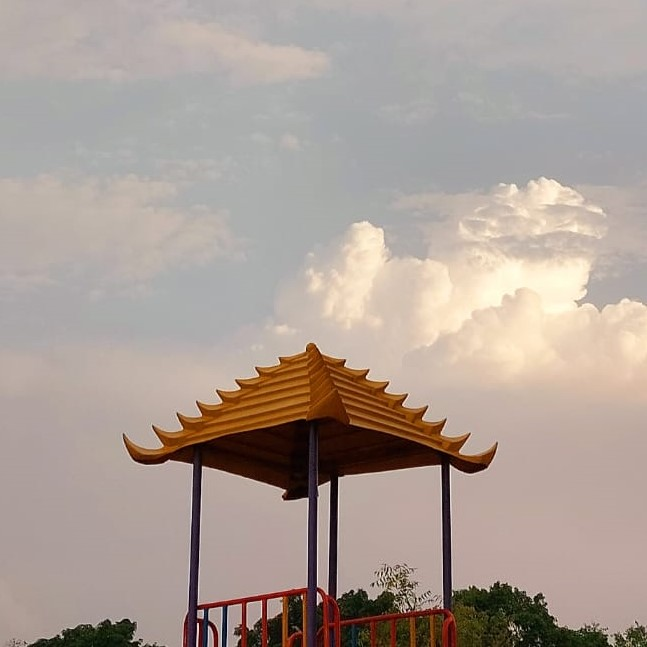

After two years of rigorous hardwork and clearing JEE Mains, we finally got admitted to IIIT Ranchi, an institute of national importance. After spending the entire first semester online, the start of second semester brought with it the golden notice of offline classes!
The classes had officially begun on the 2nd of May. From interacting with seniors to spending time with friends, strolling around the campus and literally having the time of our lives after being caged in our homes for two years, it has been nothing less than an amazing experience so far.